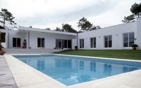

SAP · Porto
Interiores.
Espaços.
Transformações.
Remodelação de apartamentos, moradias, lojas e escritórios no Porto e concelhos próximos.
Uma intervenção.
Várias especialidades.
A SAP iniciou a atividade em 1994 e especializou-se em obras de interiores e remodelações. A apresentação da empresa destaca a coordenação das diferentes especialidades que fazem parte de uma obra.
Por onde
quer começar?
Escolha a área de trabalho e veja o que partilhar para preparar a conversa.
Trabalhos
Uma referência
para a sua ideia.
Explore as imagens e escolha uma referência para explicar o que procura.
Ver trabalhos